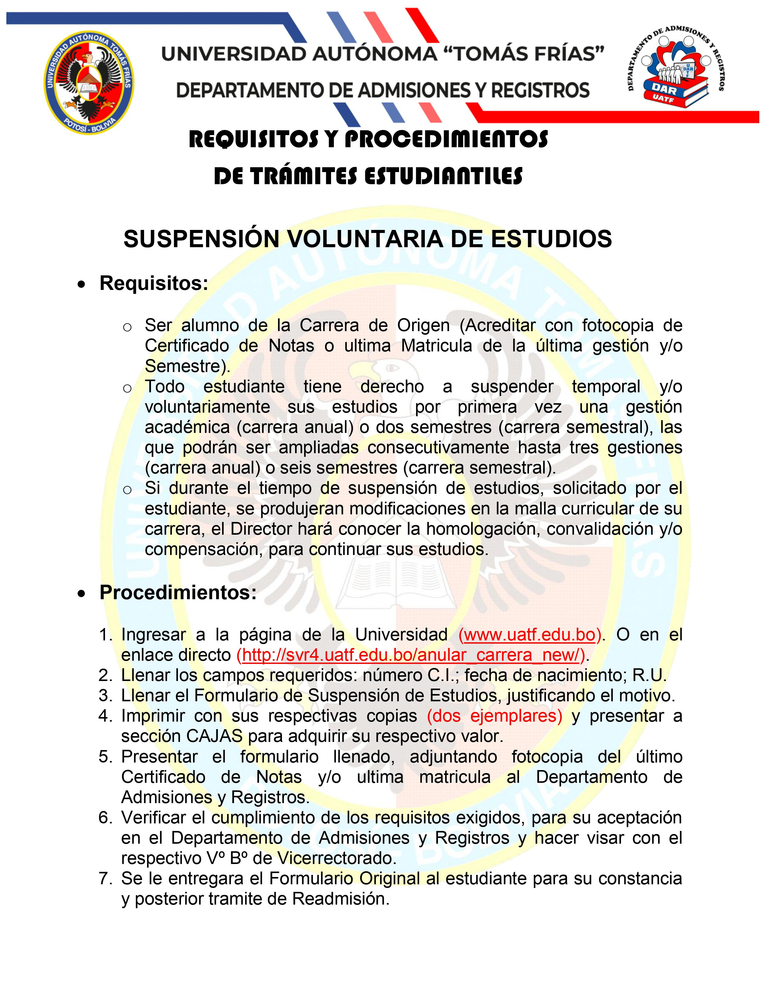
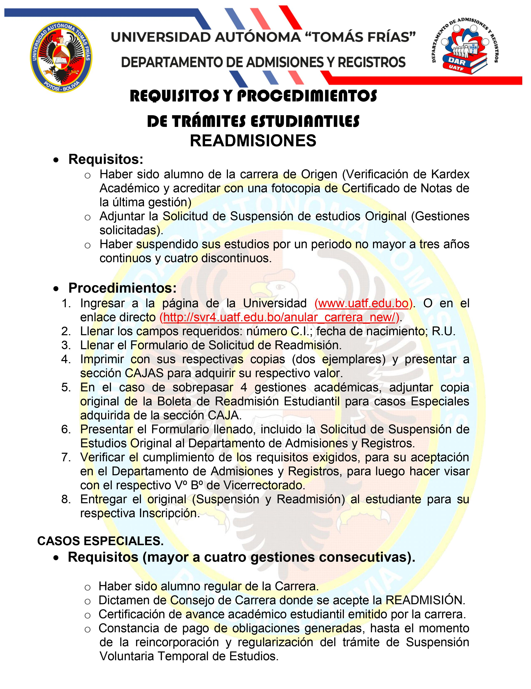
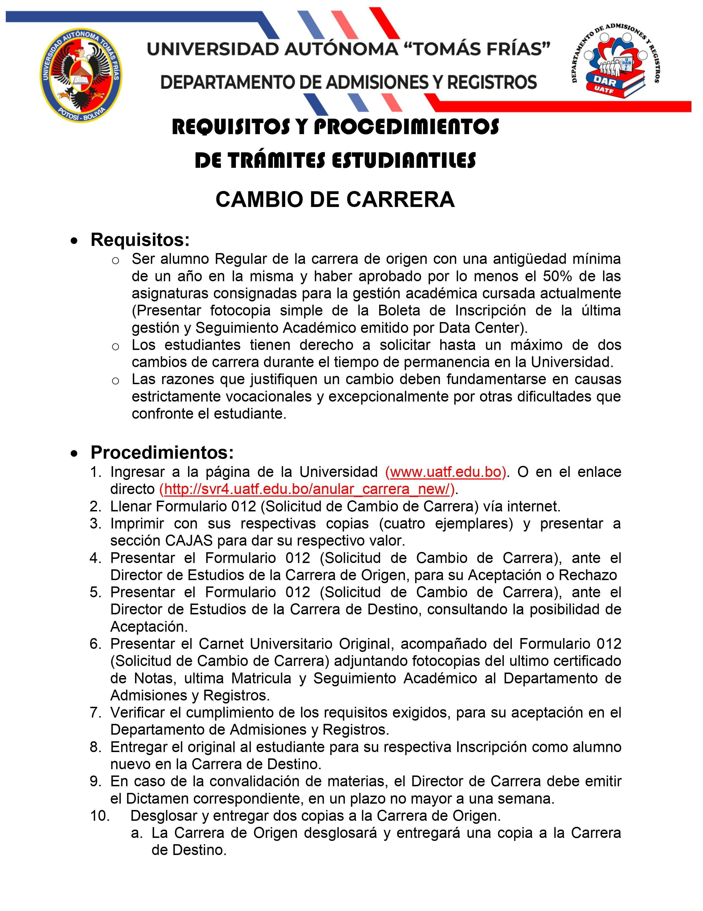

Requisitos Tramites D.A.R.
Sistema de información de los requisitos para los diferentes tramites.
Volver a página principal



Descargar PDF
Sistema de información de los requisitos para los diferentes tramites.
Volver a página principal